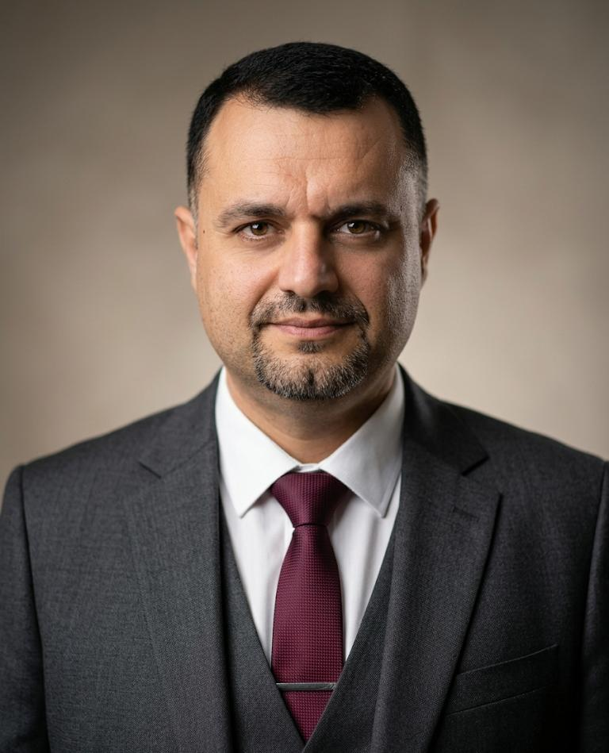

Artificial Intelligence
Deep learning, explainable AI, computer vision, NLP, and agentic systems.
Assistant Professor in the Information Systems Department at Prince Sultan University in Riyadh. His academic work connects Artificial Intelligence, Data Science, and Information Systems through research, teaching, and responsible innovation.

My work sits at the intersection of Artificial Intelligence, Data Science, and Information Systems. I investigate intelligent models while keeping their human, organizational, and ethical contexts in view.
Deep learning, explainable AI, computer vision, NLP, and agentic systems.
Predictive analytics, machine learning, multimodal data, and decision support.
Digital governance, enterprise systems, responsible adoption, and cybersecurity.
Developing trustworthy and explainable AI systems that turn complex data into transparent decisions, with applications in healthcare, cybersecurity, intelligent services, and higher education. This agenda connects model performance with responsible adoption in real organizational settings.
A 2026 study combining real-time computer vision with on-demand explanations for more transparent high-stakes AI.
DOI ↗Demonstrates how machine-learning analysis can support practical customer-retention decisions in information-intensive services.
DOI ↗Connects personalized AI-enabled learning with governance, ethical safeguards, and legal compliance in higher education.
View on Google Scholar ↗Search the curated publication collection by title, author, venue, year, type, or topic. For citation totals and the complete live profile, use Google Scholar or ORCID.
My teaching connects rigorous foundations with current practice. Students investigate real problems, evaluate evidence, build solutions, and learn to explain the consequences of technical choices.
More than 18 years across academia and information technology, with experience in teaching, research, curriculum, quality, and academic advising.
Information Systems Department, College of Computer and Information Sciences, Riyadh.
Teaching, academic advising, student activities, and quality assurance.
Courses in internet protocols, databases, and web development.
The National University of Malaysia (UKM). Research in NLP, feature selection, and document classification.
Yarmouk University · Specialization in Computer Information Systems.
Yarmouk University, Jordan.
Editorial, conference, curriculum, and quality roles that strengthen research exchange and academic standards.
Supporting the conference’s academic program and international knowledge exchange.
✓ View official source ↗Babylonian Journal of Networking (BJN) · 2026–Present
Supporting editorial and peer-review activities, scholarly quality, and publication standards.
✓ View official source ↗Contributing to curriculum review, academic quality, course and examination coordination, and student advising within computing and information systems.
Available for research collaboration, academic service, teaching opportunities, and scholarly exchange.